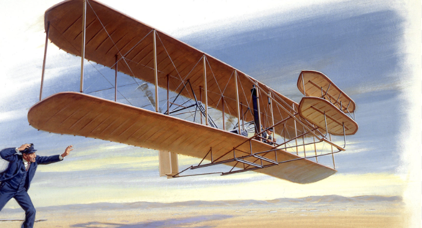
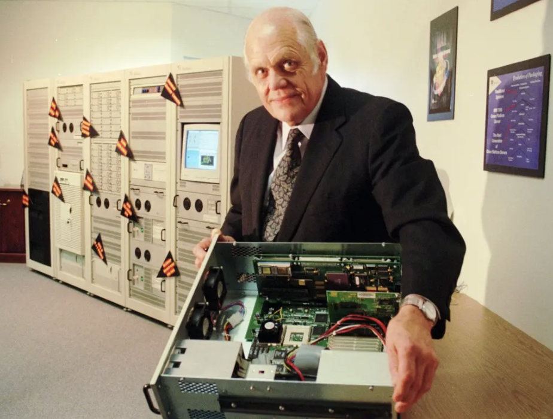

Vera Rubin's research on Dark Matter was revolutionary, as it proved to the world The Importance of Women, and how Failure has played a crucial part in her discoveries. Vera Rubin faced many obstacles and failures, with her in a male-dominant field of astronomy, many declined her works because she was a woman. Additionally, she was rejected by Princeton and many prestigious research institutions due to her gender and "Absurd Ideas" and was unable to use their laboratories which were very notorious at the time. This was shattering to Rubin, as with many declining her work, many assumed that she would give up on her campaign, but turns out she saw her failures as opportunities and advocated for her ideas to spread, ultimately paving her way to being recognized by the world today. Her "Absurd Ideas" have reshaped Astrophysics and proved that galaxies contained ten times more Dark Matter than what visible stars accounted for, also proving that there is a presence of Dark Matter. Her impact has even gone up to her creating a subfield of Astrophysics dedicated to Dark Matter Research, showing how with her Persistence and Failures faced throughout her journey, she laid the groundwork for people of today and generations later aspiring to make significant contributions in Science.

The Wright Brothers changed aviation forever, as their innovation of Flight has caught the world's attention rapidly. Creating the world's first flying machine, now with his contributions today we were able to construct airplanes not just for the wealthy but for ordinary individuals too. To get to this success though, the Wright Brothers had to face huge setbacks and competition. From their ideas failing so many times, and with another competitor like Dr. Samuel Langley on the innovation of Flight, Embracing Failure and Strategic Thinking was their friend to their success. With both of these, the Wright Brothers were able to come up with a solution eventually after all their failed attempts and after many rejections by The US Patent Office, they finally got their idea accepted and proved to the world that even with setbacks and failure, seeing them as a chance to deeply analyze what went wrong, the Wright Brothers were able to leave a mark that will never be forgotten. Their works will continue to inspire young individuals in Aviation both today and in the coming future.

Ken Olsen's contributions to FinTech have pioneered our Digital World, as his Development of Mini Computers diversified the access of computers to many Consumer-Rich Economies. In business he was able to stack up $14 Billion and recruit over 120,00 employees, making his Company (DEC) become the second largest Computer company at the time. To come to these huge victories he had to face struggles, failures, and many losses, which he suffered not just at the beginning of his journey to success but also after he became successful. His rejection of Personal Computers, later in his business led to their rise, bringing downfall to his business years later. Despite his losses later in his journey, he is heavily regarded as one of the most influential individuals in the Tech World as he completely changed the corporate culture in Tech, going on to inspire many individuals like Steve Jobs Apple, who respected Ken's works and shaped Apple's vision on Personal Computers, to Bill Gates's Microsoft that evolved through DEC making significant breakthroughs in Computing, inspiring Microsoft's vision of "A Computer on Every Desk", to Larry Page and Sergey Brin's Google who used Ken Olsen's breakthroughs to found and built the infrastructure of Google, this is to prove that regardless of all the failures you may face, one day you will be acknowledged for your works, and even become the backbone of big visions of big companies like Microsoft and Google.
Impact
The Impact of Celebrating Failure stretches like an ocean.
Celebrating Failure has allowed many individuals to become successful, from Vera Rubin to The Wright Brothers, to Ken Olsen, these are just a few who have shown the benefits of Celebrating Failure.
There are still many who Celebrated Failure and became successful, and unfortunately, we are unable to cover them today but their works have completely changed our landscape, driving innovation and paving the road to a prosperous future.
People who have Celebrated Failure continue to inspire people today and will continue to inspire many young individuals generations later who seek to bring change to this world.